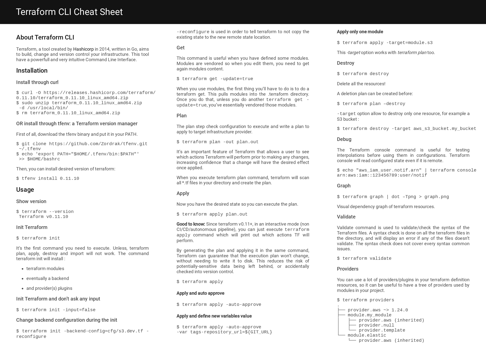
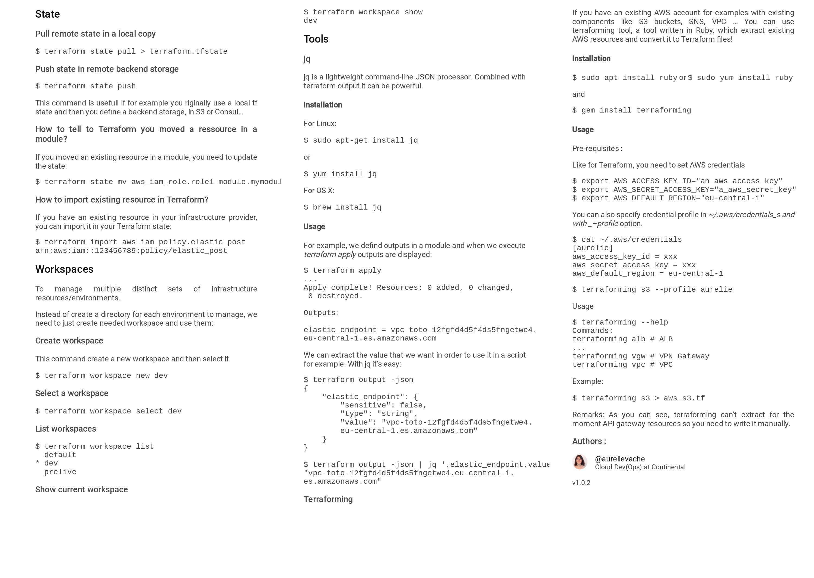

Aurélie Vache
Cloud Developer / ❤️ DevOps / Lead Developer / Développeuse Web Full-Stack

Aurélie Vache
Développeuse Cloud / DevRel
Cloud Developer ❤️ DevOps - +15 ans d'xp
Google Developer Expert on Cloud
Duchess France|Toulouse Data Science Leader Organizer
Technical writer - Speaker & Sketchnoter lover
scraly@gmail.com
Adresse E-mail
@aurelievache
Aurélie Vache
Duchess France
Site
DZone
Site
Scraly tech blog
Site
Expériences Professionnelles
-
Cloud Developer / DevRel
Novembre 2020 - Maintenant- Cloud Engineer & Developer Advocate chez Adeo (2021) Technos : Kubernetes, OpenShift, OPA GateKeeper, Google Cloud Platform, Git, GitHub, GitHub actions, GitLab CI, Docker, Python, Terraform, ServiceNow... - Cloud Engineer chez EldatoTravo * Création d’une nouvelle pipeline permettant de gérer le déploiement et le nettoyage des environnements de test * Gestion d’environnements multiples: un nouvel environnement sera créé pour chaque nouvelle Pull Request * La base de données est hébergée dans un container Docker à la place du service RDS * Destruction de l’environnement à travers un pipeline Technos : AWS Beanstalk, Dockerrun.aws.json (docker compose like de AWS), ECS, conteneurs, R53, S3, ACM (certificates manager), VPC, subnets, RDS, Git, bitbucket, bitbucket pipelines, MySQL, PHP, Symfony, Terraform, Docker... Stack Labs - Toulouse (31)
-
Développeuse Cloud / DevOps
Août 2017 - Novembre 2020Cloud Developer + DevOps:
* Development of microservices & CLI, mainly in Golang
* Build apps
* Static code analysis + lints
* Unit tests
* Package apps in Docker images
* Creation of CI/CD pipelines: for Java, Scala, Golang, Android, Python, JS...
* Deployment through CI/CD of containerized apps in Kubernetes clusters in several environments
* Infrastructure deployment through IaC (Terraform AWS resources)
* Integration/System tests (Venom)
* Event-driven architecture, Rest architecture, Message Queue architecture
for connected & autonomous vehicles projects & common services.
Projects:
* Data sharing: deliver map data with augmented data coming from another source like vehicles (Go, Cassandra, Parquet, gRPC, AWS, MapBox)
* Data acquisition: Creating a pipeline for data ingestion to receive data from cars and make it available in a data lake (Go, gRPC, Nats & Nats streaming, Cassandra, Parquet, RabbitMQ, AWS)
* Map delivery: deliver updated map data to vehicles (Go, gRPC, Swagger, SQLite, NDS, Metadata ISO 19115, AWS, Here)
Referent:
* DevOps
* CI/CD
* Jenkins
* Terraform
* Kubernetes
* Golang
* Containerized apps
Facilitator/Leader:
* 7 developers junior/senior/tech leaders
* Conferences topic
* Technical and facilitators subjects for Cloud chapter
* Any technical or human help
Work organisation:
* Spotify model
* Scrum
Continental - Toulouse (31) -
Lead Developer
Juillet 2016 - Juillet 2017Lead Dev :
- Recrutement
- Formation et encadrement des nouveaux développeurs
- Mise en place de nouvelles méthodes de travail autour des pratiques Agile et DevOps
- Suivi du développement et des bonnes pratiques
- Réponses techniques Appel d'Offres
- Support avant-vente pour les rendez-vous clients (interconnexion plateforme technique)
- Gestion de projet technique, pilotage de webdesignerDéveloppement Full-Stack :
- Architecture, Développement, Ergonomie, packaging, déploiement, évolutions, mises en production et maintenance d'applications web métiers en Java (Java EE, GWT, Spring, Hibernate, Tomcat, Big Data avec Google BigQuery, OrientDB)
- Conception et gestion de projets technique d'applications Facebook et Twitter (Open Graph, JS & PHP SDKs, PHP, HTML5, XHTML, CSS 2.1 and 3, Javascript, jQuery, AJAX, MySQL)
- Création, modifications, optimisation des performances, sécurisation, mises en ligne et maintenance de sites sous Wordpress
- Référente technique Facebook, Twitter APIs ...
- Développement de Plugins Wordpress/Drupal/Dotclear/SPIP...
- SEO et SEA (Google AdWords), Google MyBusiness
- Support collaborateurs technique et fonctionnel
- Veille technologique(Dev)Ops :
- Gestion et surveillance/monitoring de plusieurs serveurs (Zabbix, Grafana)
- Mises en Production
- Garante de la Qualité de Services (QoS)
- SysAdmin Linux
- Support de niveau 1, 2 et 3
- Optimisations des performances MySQL, Tomcat et Apache
- Astreintes technique
atchikservices - Toulouse (31) -
Développeuse Web Full-Stack : Java/Java EE - Social Apps (Facebook & Twitter)
2011 - Juin 2016Définition de l'Architecture, Développement, Ergonomie, packaging, installation, évolutions, mises en production et maintenance d'applications web en Java (Java EE, GWT, Spring, Hibernate, Apache, Tomcat, MySQL, Big Data avec Hadoop/HBase puis avec Google BigQuery).
=> Safescreen : application qui centralise l'ensemble des contenus conversationnels/des flux des clients, en temps réel, quel que soit le réseau social, le site internet, le blog ...(6,2 milliards de messages par an) Depuis l’outil les équipes de modérateurs, de community managers, de veilleurs et de supervision peuvent modérer, classifier, appliquer une tonalité aux contenus de nos clients...
=> NCIS : application permettant d'analyser les données en temps réel. Génération de reportings client, des dashboards pour nos équipes interne et possibilité pour nos clients de suivre les actions de nos équipes en temps réel.
Conception d'applications Facebook et Twitter (Open Graph, JS & PHP SDKs, PHP, HTML5, XHTML, CSS 2.1 & 3, Javascript, jQuery, AJAX, MySQL).
Création, modifications, optimisation des performances, sécurisation, mises en ligne et maintenance de sites/Blogs sous Wordpress.
Développement de Plugins Wordpress/Drupal/SPIP/Dotclear.
Gestion de projet technique, pilotage de webdesigner.
SEO et SEA (Google AdWords).
Optimisations des performances (Cache, MySQL, Tomcat et Apache).
Garante de la Qualité de Services (QoS).
Audit Ergonomique de plusieurs applications métiers. Gestion et surveillance/monitoring de plusieurs serveurs (+Sysadmin).
Support, mises en Production.
atchikservices - Toulouse (31) -
Développeur & Analyste d'Exploitation
2008-2011Encadrement d'une équipe de techniciens d'exploitation, Assistance, Conseils, Formation, Transfert de connaissances, Organisation et contrôle du travail.
Gestion des déploiements de plusieurs opérateurs téléphoniques (procédures, installations, gestion des versions).
Garante de la Qualité de Service (QoS).
Support Opérationnel de Niveau 2 et 3.
Travail quotidien avec le Développement, le Marketing Opérationnel. Utilisation de SCRUM quotidienne.
Gestion de la complexité liée à l'installation et au paramétrage des applications et serveurs.
Préparation, Organisation de réunions.
Rédaction de documentation générale, analytique et technique en anglais.
Etude sur la Réplication Mysql Master to Master to Slave (MySQL).
atchikservices - Toulouse (31) -
Développeuse Java/Java EE (J2EE)
2006-2008Développement de plusieurs projets liés aux services de téléphonie mobile (Chat, sites de rencontres et autres pour les interfaces WEB, WAP, OML, XHTML, SMS et MMS) pour plusieurs opérateurs téléphoniques dans le monde.
Analyse, Conception, Développement, Packaging, Installation, Correction de bugs.
Gestion technique d'un projet et de plusieurs ingénieurs, maintenance des comptes.
Rédaction de documentation générale, analytique et technique en anglais.
atchikservices - Toulouse (31) -
Stagiaire en développement Java/Java EE
Février-Juin 2005Réalisation d'une interface web de réservation et d’organisation de réunions pour l’outil de conférence WorkSpace 3D.
Tixeo - Montpellier (34)
-
Développeuse / Technicienne Informatique
Juin-Juillet 2004Développement du site dynamique en PHP/MySQL de l'entreprise Protecmo.
Maintenance informatique, réseau et rédaction de guides utilisateur.
Protecmo - Montpellier (34) -
Stagiaire en développement
Janvier-Mars 2004Logiciel de prévision de trésorerie en Visual Basic 6.
Formation du logiciel Act à l'ensemble des salariés de l'entreprise (maison mère + commerciaux externes), personnalisation du logiciel.
Maintenance informatique et réseau.
Protecmo - Montpellier (34)
Formation
-
Licence Professionnelle « Développement d’Applications E-business »
2004-2005I.U.T de Montpellier (34)
-
BTS Informatique de Gestion « Spécialité Développeur d’Applications »
2002-2004Lycée Jean Mermoz - Montpellier (34)
-
Baccalauréat STT « Spécialité Informatique De Gestion »
2002-2004Lycée Jean Mermoz - Montpellier (34)
Développement professionnel
-
Intro to ML: Language Processing
Avril 2020Qwiklabs
-
GCP Essentials
Avril 2020Qwiklabs
-
DevOps Essentials
Avril 2020Qwiklabs
-
Kubernetes in Google Cloud
Avril 2020Qwiklabs
-
BULATS
Decembre 2018Niveau : B2
Continental - Toulouse (31) -
Formation « Leadership au féminin »
Octobre 2018Continental - Toulouse (31)
-
Formation « Développement d'applications avec la stack MEAN »
Novembre 2016IB Formation - Toulouse (31)
-
Formation « Fondamentaux du Management »
Octobre 2016EMCI - Toulouse (31)
-
MOOC « Gestion de Projet »
Octobre 2015Centrale Lille
-
Formation « Développer des applications Android professionnelles »
Octobre 2014DocDoku - Toulouse (31)
-
Formation « Les critères Ergonomiques : une méthodologie simple et efficace »
Mai 2014Valtech Training - Paris, La Défense (92)
-
Formation « SST : Sauveteur Secouriste du Travail »
2007 - maintenantSOTEL - L'Union (31)
-
Formation « Google AdWords »
Octobre 2013La Cantine - Toulouse (31)
-
Formation « Gestion avancée de la persistance avec Hibernate »
Mars 2011Valtech Training - Toulouse (31)
-
Formation « SCRUM »
Mai 2008atchikservices - Toulouse (31)
Expérience Associative
-
Marraine Elles Bougent @Continental
Aout 2017* Role modèle pour les jeunes filles
* Intervention auprès de collégiennes et lycéennes
* Aide organisation journée annuelle "Elles s'automotivent" réunissant une centaine de jeunes filles
* Création/Animation/Leader atelier coding
-
Co-organisateur du Toulouse Data Science
2017Le TDS : l'association des data héros Toulousains (http://www.tlse-data-science.fr/). L'objectif est de créer un lieu d’échange et de partage autour de la valorisation des données massives et de l’analyse prédictive. N'hésitez pas à nous rejoindre, à assister à nos événements, et à nous proposer des sujets qui vous tiennent à coeur.
-
Marraine Promo#2 Simplon.co Toulouse
Septembre 2016Simplon.co est un réseau de fabriques sociales du numérique qui propose des formations intensives pour apprendre à créer des sites web et des applications mobile, et en faire son métier.
Apprendre à coder en 6 mois, c’est possible avec la nouvelle fabrique sociale du numérique Simplon Midi-Pyrénées et de la motivation ! -
Co-organisatrice du DevFest Toulouse & DevFest Pitchouns
Aout 2016Basé sur une contraction de "Developer's Festival", le DevFest est la bannière qui rassemble les plus grands événements organisés par les communautés autour des technologies Google : les Google Developer Groups. En France, les deux plus grands DevFest sont ceux de Nantes et de Paris. Plus concrètement, un DevFest est une conférence technique autour des technologies affiliées à Google (Web, Apps, Cloud, Objets connectés, Design, etc...).
La première édition du DevFest Toulouse a eu lieu le 3 novembre 2016 à l'IUT de Blagnac. 300 participants, 21 talks. -
Membre du Board de Duchess France
Janvier 2015Créée en 2010, Duchess France est une association destinée à valoriser et promouvoir les femmes développeuses ou ayant un profil tech, leur donner plus de visibilité, mais aussi à faire connaître ces métiers tech et créer des vocations auprès d’autres femmes et jeunes filles.
L'association organise des événements techniques destinés à tous sur diverses technologies pour apprendre et partager des connaissances. Ces événements s’adressent principalement à des développeurs ou profil tech, débutant ou confirmés.
Loisirs/Passions
-
Retro-gaming
-
Vide grenier
Create & distribute a plugin for Kubernetes? Easy!
Common tips & mistakes in Go and how to solve them
Tips pour combattre le syndrome de l'imposteur
Terrible BOF
Docker, Kubernetes & Istio : Tips, Tricks & Tools
Intervention auprès de lycéennes
Duchess France
Dans les coulisses de Google BigQuery
The Cloud Careers Podcast
28 Avril 2021
I got to know Aurélie online via some common friends and immediately fell in love with her work on simplifying complex
topics (namely Istio and Kubernetes) visually. So I had to have her on the podcast.
Aurélie holds two hats, a Cloud Developer and DevRel, so you are getting to learn about two positions in this episode,
it’s that cool?
We talked with Aurélie about her background, education, and past experiences. We also discussed what she does these days
in her current roles. Aurélie has an inspiring story that I hope you will enjoy.
Ecouter le
podcast
Discover Civo Cloud: a managed Kubernetes based on K3s (Dev.to)
6 Avril 2021
In our daily work, we are using Kubernetes offers like GKE, EKS, Kapsule... and at Stack Labs we recommand their usage.
I also like playing with Kubernetes, I like managed Kubernetes cluster, so when I saw the beta program of Civo Cloud, I
asked them quickly if I can test their offer :-)
Lire
l'article
ReX: With GitOps, stop playing with your cluster! (Medium)
1 Avril 2021
In the Kubernetes world when we want to handle sensitive data the usage is to store
it in a Secret in a Kubernetes
cluster. Cool, but when we want to save our Secrets in our source code (Git)
repositories, a security problem appears.
We will see in this article, a solution that can helps us ;-).
Lire
l'article
Debugging Kubernetes: Execute kubectl commands with a Service Account (Dev.to)
26 Mars 2021
As you already know, Kubernetes is not an easy technology. It's a powerful Cloud technology but it can be time-consuming
and painful to debug or troubleshoot a problem and to know how to do in several solutions.
It's for that reason I created a lot of technical sketchnotes about Kubernetes that you can see in "Understanding
Kubernetes in a visual way", I created also a new serie of videos that mix sketchnote and audio content, and now my new
idea is to publish an article focused on one problem/one need.
Lire
l'article
Store your Kubernetes Secrets in Git thanks to Kubeseal. Hello SealedSecret! (Dev.to)
23 Février 2021
In the Kubernetes world when we want to handle sensitive data the usage is to store
it in a Secret in a Kubernetes
cluster. Cool, but when we want to save our Secrets in our source code (Git)
repositories, a security problem appears.
We will see in this article, a solution that can helps us ;-).
Lire
l'article
Aurélie Vache: “Code has no gender” #WomenAreExperts (Medium)
21 Janvier 2021
It’s 2021 and women are still a minority in tech. One way to change that is by
making those who are in the tech world
more visible, so others can follow their path.
#WomenAreExperts is a new series that features amazing women developers from the
Google Developers Experts community.
Today, meet Aurélie Vache: developer and an Expert in Google Cloud.
Voir l'article (anglais)
How to debug containers running in an AWS Beanstalk? (Dev.to)
19 Janvier 2021
One upon a time, a team who have their infrastructure in a Cloud provider, AWS. They
created many of AWS resources like
Route53, S3 buckets, IAM users, roles, policies ... & AWS Beanstalk environments.
The team dedicated their monitoring to an external company/service and was happy
'till they needs to add one more
container in an AWS Beanstalk environment (and of course they will need to debug
inside them what is happening, it's the
reason of this story ^^).
Have you ever struggle with AWS Benstalk?
Me? Yes, it's my case! :-D
Lire
l'article
Top 8 des comptes Twitter à suivre pour faire une bonne veille tech (ada Tech School)
13 Janvier 2021
#5 Aurélie Vache - La développeuse toujours au courant des initiatives des femmes
dans la tech
Voir l'article
How I fail the GCP Professional Cloud Architect certification exam (Dev.to)
4 Janvier 2021
it's not an easy article to write, but I think it can be useful for people who want
to pass this certification exam.
Today I try to pass the exam for the GCP Professional Cloud Architect certification,
and I failed.
It's not a good feeling. I'm disappointed with myself, but I know that I learned a
lot during my preparation and that's
what matters...
Lire
l'article
2020 in review... What a year! (Dev.to)
31 Décembre 2020
On the last day of 2020, it's time to made a review of the whole year... and what a
year!
Yes, in 2020, we learn one new word: lockdown. It's a year of the covid19, but I
will not talk about it, only about my
own 2020 review :-).
Lire
l'article
DevNation: The Show - Interviewed by Sebastien Blanc (Youtube)
6 Octobre 2020
Host: Sebastian Blanc
Join us for a weekly hour-long live chat show with a special guest, Aurélie Vache at
Continental. She has over 14 years
in software development and enjoys sharing knowledge about Kubernetes, Istio, and
Docker.
Voir
l'interview (english)
Tips about Certified Kubernetes Application Developers (CKAD) exam (Dev.to)
25 Aout 2020
After several years of work with Kubernetes, few days ago I passed successfully the
Certified Kubernetes Application
Developer (CKAD) certification exam.
Several people asked me to write an article about that, so here a quick article
about what is the CKAD and some tips &
tricks about the CKAD exam.
Lire
l'article
Understanding Docker in a visual way (+20 Part Series) (Dev.to)
3 Aout 2020
Understanding Docker can be difficult or time-consuming. In order to spread
knowledges about Cloud technologies I
started to create sketchnotes about Docker. I think it could be a good way, more
visual, to explain Docker (and others
technologies like Kubernetes and Istio).
I started the 3th of August the first Docker sketchnote.
Lire l'article
Learning methods/ways for neuro atypical people (Dev.to)
28 Juillet 2020
We are all different.
We know that. It's a fact.
And we are all agree with that.
But, we all learn in the same way...
Is this really working? Are there others way to explain and learn things?
We will see in this article what is neurodiversity, another way of explaining things
and why we need to adapt our
methods of learning.
Lire
l'article
Understanding Istio in a visual way (Book)
28 Juin 2020
Understanding Istio can be difficult or time-consuming. I create this collection of
sketchnotes about
Istio, a Service Mesh, in order to try to explain the Cloud technology in a visual
way.
Understanding Istio
in a visual way
Comprendre visuellement Kubernetes avec Aurélie Vache (Electro Monkeys Podcast)
27 Juin 2020
"Dans cet épisode, j’ai le plaisir de recevoir Aurélie Vache. Aurélie est
développeuse pour Continental, mais elle est
avant tout l’auteur de sketch notes sur Kubernetes et Istio qu’elle a publié
originellement sur Twitter avant de les
regrouper sous forme de pdf sur Gumroad. Avec elle, nous allons en apprendre un peu
plus sur la genèse de ce projet un
peu fou dans lequel elle a rendu des pods semblables à des pokeballs !"
Ecouter le
podcast
Understanding Kubernetes in a visual way - behind the scenes (Dev.to)
1 Juin 2020
Understanding Kubernetes can be difficult or time-consuming. In order to spread
knowledges about Cloud technologies I
started to create sketchnotes about Kubernetes. I think it could be a good way, more
visual, to explain Kubernetes (and
others technologies).
I started the 4th of April the first Kubernetes sketchnote.
After almost two months, I've published all the Kubernetes sketchnotes (and new
ones!) in a book of 120 pages:
"Understanding Kubernetes in a visual way".
Lire l'article
Understanding Kubernetes in a visual way (Book)
31 Mai 2020
Understanding Kubernetes can be difficult or time-consuming. I create this
collection of sketchnotes about Kubernetes in
order to try to explain the Cloud technology in a visual way.
Understanding
Kubernetes in a visual way
Understanding Istio in sketchnotes (+15 Part Series) (Dev.to)
19 Mai 2020
Understanding Cloud technologies, like Kubernetes, can be difficult or
time-consuming. In order to spread knowledges
about it, I started to create sketchnotes about Kubernetes and know it's time to
talk about a perfect companion of
Kubernetes, a service mesh, Istio...
Lire la serie d'articles
Deploying a Kubernetes Cluster (AWS EKS) & an API Gateway secured by mTLS, with Terraform, External-DNS & Traefik (2 parts) (Dev.to)
25 Avril 2020
Once upon a time a team who wants to have a dedicated Kubernetes cluster for their
services. Services which will be
deployed need to be exposed through an API Gateway and protected via mTLS....
Lire la serie d'articles
Understanding Kubernetes in sketchnotes (+30 Part Series) (Dev.to)
24 Avril 2020
Understanding Kubernetes can be difficult or time-consuming. In order to spread
knowledges about Cloud
technologies I
started to create sketchnotes about Kubernetes. I think it could be a good way, more
visual, to explain
Kubernetes (and
others technologies)...
Lire la serie d'articles
Interview de Aurélie Vache, développeuse Cloud et DevOps (Developpez.com)
23 Mars 2020
Nous vous proposons une interview de Aurélie Vache, Développeuse Cloud (& DevOps)
chez Continental à Toulouse, l’une des
leaders de Duchess France, membres de la core team du Toulouse Data Science (TDS),
rédactrice d'articles techniques et
marraine de l’association « Elles Bougent »...
Lire
l'article
Pour plus de développeuses (JeSuisUnDev)
10 Février 2020
Contribution à l'article "Pour plus de développeuses" du blog "jesuisundev" sur la
question "Si tu voulais convaincre une femme de se lancer dans la tech, tu lui
dirait quoi ?".
Lire
l'article
Tester un service gRPC en Go avec le Table Driven Tests (Magazine Programmez! n°238 & n°239)
1 Février 2020
Tout le monde sait qu’une couverture de code à 100% n’existe pas et n’apporte aucune
valeur ajoutée. En fait, au
quotidien,
ce que nous voulons vraiment c’est tester notre business logic, l’intelligence de
notre application. Dans cet article
nous allons
partir d’une petite application CLI codée en Go qui ne possède pas encore de tests
unitaires, puis nous allons réaliser
quelques tests unitaires de services gRPC.
Testing a gRPC Service in Go With Table Driven Tests (DZone)
08 Janvier 2020
In this article, we discuss how to test a gRPC service in Go with Table-Driven tests
in order to enhance our test
automation.
Lire
l'article
Numéro spécial Duchess France (Magazine Progammez! 236)
Janvier 2020
Rédactrice en chef et rédaction de plusieurs articles pour le numéro 236 du magazine
Programmez
How to Write an HTTP REST API Server in Go in Minutes (DZone)
26 Novembre 2019
Learning a new language is not easy, but with concrete examples and step-by-step
instructions, it's a powerful way to
succeed at it. For this reason, I decided to write a series of step-by-step
tutorials.
Let's use the power of Go to create an HTTP REST API server in Go.
Lire l'article
How to Create a CLI in Go in Minutes (DZone)
18 Octobre 2019
In our day-to-day work, we are used to using nifty tools in the command line. We are
surrounded by CLI (Docker, Kubectl,
Terraform, AWS, etc.). We will see in this tutorial, that in just a few minutes, it
is possible to create a CLI with Go
language and the Cobra library. Are you ready?
Lire l'article
Transcript du talk "Le syndrome de l'imposteur, kezako ?"
4 Juillet 2019
Cet article est un transcript du talk éponyme que j’ai donné à Riviera Dev à Nice le
16 mai 2019 et au VoxxedDays
Luxembourg le 22 juin 2019.
Lire
l'article
Je crée ma CLI en Go en quelques minutes (Magazine Programmez! n°230)
1 Juin 2019
Dans notre travail au quotidien nous avons l’habitude d’utiliser de chouettes outils
en ligne de commande, nous sommes
entourés de CLI (docker, kubectl, terraform, aws ...). Nous allons voir dans ce
tutoriel, qu’en seulement quelques
minutes il est possible de créer une CLI avec le langage Go et la bibliothèque
Cobra. Vous êtes prêt ?
Auto-Interview orateur
15 Mai 2019
Auto-interview donnée dans le but de se présenter et de donner son ressenti, son
expérience, ses peurs ... en tant qu'oratrice.
Lire l'interview
Terraform Advanced : jouons avec les data external de Terraform (Magazine Programmez! n°228)
21 Mars 2019
Avec Terraform, vous pouvez utiliser une data source, afin de
récupérer une ressource existante, dans une nouvelle ressource
que vous souhaitez créer. Ce concept de data source
est puissant et facile à comprendre et à manipuler, mais il est important
de savoir que vous ne pouvez pas récupérer tous les types
de data source à votre guise. En effet, plusieurs types de data source
ne peuvent pas être récupérés avec un filtre, mais plusieurs
autres le peuvent...
Terraform CLI Cheat Sheet (DZone)
1 Décembre 2018
If all you need is a quick look, take a look at this reference article for Terraform
CLI.Lire
l'article
Let's play with Terraform external provider (DZone)
1 Décembre 2018
With Terraform, in order to use an existing resource in a new resource we want to
create, we can use a data source. It's
powerful and easy to understand and manipulate, but the thing to know is that you
can't retrieve every data source type
as you want. Indeed, several data source types can't be retrieved with filter, but
several another can...Lire
l'article
Manage Multiple Environments With Terraform Workspaces (DZone)
5 Mai 2018
When you want to manage (create, modify and remove) your infrastructure, getting
started with Terraform is easy. Just
create files ending with .tf containing the description of the resources you want to
have. But manage multiple/several
environments is a little trickier...Lire l'article
Infrastructure as Code avec Terraform (Duchess France)
16 Avril 2018
Vous ne voulez plus créer manuellement vos machines physiques, vos VMs, vos VPC, vos
conteneurs, vos lambda … ? Nous
allons voir dans cet article qu’il existe un outil permettant de faire de
l’Infrastructure as Code et qui vous permettra
de passer du ClickOps au DevOps…Lire l'article
Développeuses : le syndrome de l'imposteur (O'Clock)
6 Mars 2018
Notre semaine spéciale #développeuses se poursuit ! Ici, une tribune écrite par
Aurélie Vache qui s’interroge sur le
syndrome de l’imposteur.
"Je m’appelle Aurélie Vache, je suis développeuse depuis plus de 12 ans et je
souffre de ce que l’on appelle le syndrome
de l’imposteur. Au fil des années, j’ai appris à répondre à cette petite voix qui a
tendance à me rabaisser. Je vais
vous expliquer comment au jour le jour, je fais face à ce syndrome qui semble
toucher une plus grande proportion de
femmes que d’hommes. Mais d’abord, commençons par le commencement…Lire
l'article
Infrastructure as Code avec Terraform (Magazine Programmez! n°214)
Janvier 2018
Vous ne voulez plus créer manuellement vos machines physiques, vos VMs, vos VPC, vos
conteneurs, vos lambda ... ? Nous
allons voir dans cet article qu’il existe un outil permettant de faire de
l’Infrastructure as Code qui vous permettra de
passer du ClickOps au DevOps.
Interview (JobIRL)
2 Novembre 2017
Je suis développeuse. Derrière ce simple mot se cache un vaste univers mêlant
communication, organisation, compréhension du besoin, analyse, connaissances et
utilisation de plusieurs langages informatiques, travail en équipe, tests,
intégration … Lire l'article
La reconnaissance d’images à portée de main avec l’API Cloud Vision de Google (Magazine Programmez! n°208)
3 Juin 2017
L’API Cloud Vision de Google, qui est sortie récemment en GA (General Availability)
est un nouveau service de reconnaissance d'images, faisant partie de l’offre de
Machine Learning (apprentissage
automatique) de Google. Grâce à cette API, Google continue de démocratiser les
technologies de Machine Learning utilisées en interne et fournit aux
développeur.se.s une simple API REST extrêmement puissante...
A word for speakers - Why submit a talk? (EclipseCon France 2017)
10 Mars 2017
Debating whether or not to submit a talk? Aurélie Vache has some answers for you.
Speaking in front of people is an exercise that is not without challenges but is so
rewarding. Share your experience, present a technology, do a live-coding, tell how
you have to build an entire stack hosted in the cloud processing a large volume of
data, replicated, load balanced ... These are some of the many examples. Whether you
are more front, back, ops, data, UX ... What you have to say is important.
I have heard many reasons for not speaking. Here are a few of them...
Lire l'article
Apprendre le code aux enfants (Magazine Programmez! n°202)
1 Décembre 2017
Coordination du dossier "Apprendre le code aux enfants" et rédaction de plusieurs
articles du dossier
Lire l'article
Mastering Hibernate (Packt Publishing)
16 Mai 2016
Relectrice du livre "Mastering Hibernate". Apprendre à utiliser correctement le plus
populaire outil d'Object-Relational Mapping pour vos applications
d'entreprise.
Voir le livre
Numéro spécial Duchess France (Magazine Programmez! n°196)
30 Avril 2016
Rédactrice en chef et rédaction de plusieurs articles pour le
numéro 196 du magazine Programmez
Femmes Développeuses: interview Aurélie Vaché, développeuse Full-Stack (Butter Cake par Youmna Ovazza)
26 Novembre 2015
Cette interview fait parti d'une suite de 4 interview de développeuses. Un dossier
réalisé par Youmna Ovazza.
Lire l'article
Dans les coulisses de Google BigQuery (Magazine Programmez! n°188)
28 Aout 2015
Lorsque l’on pense à des technologies liées à la Big Data, on pense de
suite à l’écosystème Hadoop, ou bien à Elasticsearch, ou bien ces
temps-ci, beaucoup à Spark. Mais il y a un « petit service » de Google qui
ne fait pas beaucoup parler de lui qui peut cependant tirer son épingle du
jeu dans différents cas de figure...
Lire l'article
Linux en tant que poste de développeur (Magazine Programmez! n°186)
30 Mai 2015
Vous avez choisi de passer votre environnement de développement à
Linux, c’est un bon choix ! En premier lieu, il faut que vous choisissiez
une distribution, et, parmi la multitude des distributions Linux qui existent,
je suis d’accord il y a de quoi être perdu et ne pas savoir quoi choisir.
Afin d’aiguiller votre choix, il faut savoir qu’en ce moment il y a 3 distributions
qui sont prisées par les développeurs...
Lire l'article
Dossier sur les développeuses (Magazine Programmez! n°184)
28 Mars 2015
Participation à la rédaction du dossier sur les développeuses avec Duchess France +
interview.
Lire l'article
Dans les coulisses de Google BigQuery #BigData (Duchess France)
26 Mars 2015
Lorsque l’on pense à des technologies liées à la Big Data, on pense de suite à
l’éco-système Hadoop, ou bien à Elasticsearch ou bien ces temps-ci beaucoup à Spark,
mais il y a un « petit service » de Google qui ne fait pas beaucoup parler de lui
mais qui peut tirer son épingle du jeu dans différents cas de figure...
Lire l'article
Le SSL sera gratuit d'ici 2015 (Journal Du Net)
20 Novembre 2014
Le SSL (Secure Socket Layer) ou TLS (Transport Layer Security) est un protocole de
sécurité d'échanges de données sur Internet ou sur un réseau interne.
C'est le protocole de sécurité le plus répandu sur le web...
Lire l'article
Comment optimiser la vitesse de chargement d’un Blog/Site sous WordPress ? (Miss SEO Girl)
21 Septembre 2014
Lorsque l’on à un site ou blog sous WordPress, après l’avoir sécurisé pour éviter
qu’il ne se fasse pirater, il est important de s’attaquer à une autre tâche
importante : l’optimisation des performances de son site...
Lire l'article
Comment sécuriser son WordPress ? (Miss SEO Girl)
27 Juillet 2014
Comment sécuriser son WordPress ?
Avant tout je tiens à remercier Miss SEO Girl de m’avoir invité à rédiger un petit
article sur son Blog :)
Depuis quelques mois il ne se passe pas un jour sans lire ou entendre qu’une
personne autour de moi s’est fait pirater son ou ses sites. Si l’on regarde de plus
près les sites en question, il s’agit dans une majeur partie de sites ou blogs
sous...
Lire l'article
"Understanding Docker in a visual way" (Publication: 31/01/2021)
"Understanding Istio in a visual way" (Publication: 28/06/2020)
"Understanding Kubernetes in a visual way" (Publication: 31/05/2020)
Terraform Cheat Sheet

